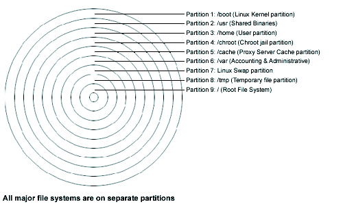

3.5. Disk Druid
Disk Druid Partitions is a program that partitions your hard drive for you. Choose Add to add a new partition, to edit a partition, to delete a partition and to reset the partitions to the original state. When you add a new partition, a new window appears on your screen and gives you parameters to choose. Different parameters are:
for where you want to mount your new partition in the filesystem.
for the size of your new partition in megabytes.
Linux native for Linux filesystem and Swap for Linux Swap Partition.
: If you have a SCSI disk the device name will be /dev/sda and if you have an IDE disk it will be /dev/hda. If you're looking for high performance and stability, a SCSI disk is highly recommended. Linux refers to disk partitions using a combination of letters and numbers. It uses a naming scheme that is more flexible and conveys more information than the approach used by other operating systems.
Here is a summary:
Keep this information in mind, it will make things easier to understand when you're setting up the partitions Linux requires.Disk naming convention
- First Two Letters
The first two letters of the partition name indicate the type of device on which the partition resides. You'll normally see either hd (for IDE disks), or sd (for SCSI disks).
- The Next Letter
This letter indicates which device the partition is on. For example: /dev/hda (the first IDE hard disk) and /dev/hdb (the second IDE disk).
Swap partitions are used to support virtual memory. If your computer has 16 MB of RAM or less, you must create a swap partition. Even if you have more memory, a swap partition is still recommended. The minimum size of your swap partition should be equal to your computer's RAM or 16 MB (whichever is larger). The largest useable swap partition is roughly 1 GB, since 2.2 kernel, 1 GB swap file are supported so making a swap partition larger than that will result in wasted space. Note, however, that you can create and use more than one swap partition although this is usually only necessary for very large server installations.
Try to put your swap partitions near the beginning of your drive. The beginning of the drive is physically located on the outer portion of the cylinder, so the read/write head can cover much more ground per revolution.

representation of linux partition